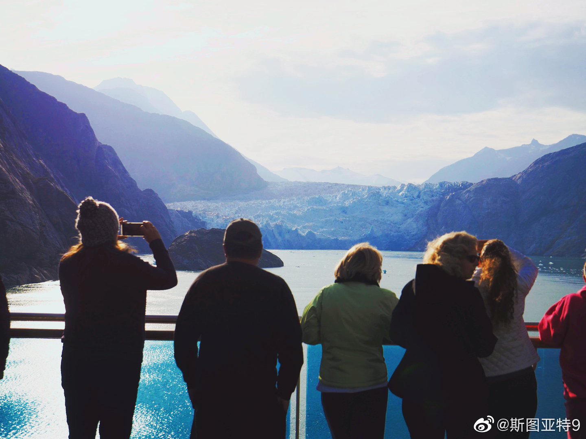

好像每个阿拉斯加游轮都会开去一个冰川观光。即使是同一条船，不同的日期去的冰川也不是同一个。据说最好的是Glacier Bay National Park。我们并没有订倒那条船。我们坐的那一条船去的是Tracy Arm Fjord。那天号称离冰川更近的地方有海豹在水里游泳，所以游轮不能靠近了。于是只能远远的看。这感觉就白去了是不是？Tracy Arm Fjord这个狭长的一段水路感觉有点三峡那个意思（其实我也没去过三峡，只是在纪录片上看的）。风景其实挺不错的，不过光线不算太好，所以照片一般，且懒得ps了。凑合看吧。
- 